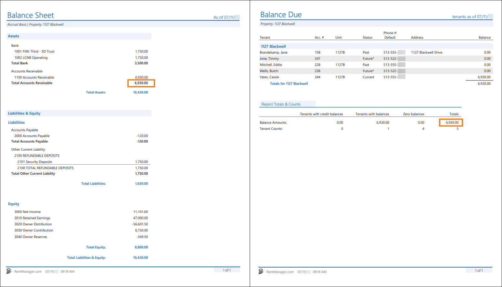

Source: https://rmxhelp.rentmanager.com/Topics/Express/KB/Report-Balance-Due-Balance-Sheet.htm
Balance Due and Balance Sheet
Both the Balance Due and Balance Sheet provide tenant credit and debit balances. The Balance Due displays current unpaid tenant transactions as of the report date, while the Balance Sheet report evaluates the liabilities and equities of a property against their assets.
Warning
The information contained here does not replace the advice of an accountant. If you are unclear about how to interpret the data presented in the related reports, please consult your accountant.
The Balance Due report displays the current amount of unpaid tenant and, optionally, prospect transactions as of the report date. This report displays balance totals for each account, each property, and a total for all properties. You can use this report to quickly review tenants that need to be sent notices for payment or prospects that have not paid their application fees.
The Balance Sheet report displays the financial position of a property or business as of a specified date. This allows you to view the assets of one or more properties and the claims (liabilities and equities) against those assets using the following rule: Assets = Liabilities + Equities. You can confirm the accounts receivable account that is included in this report in system preferences. For more information, refer to General Ledger System Accounts (System Preferences).
Related Privileges
| Group | Privilege | Column |
|---|---|---|
| Letter/Email Templates/Reports/Packets | Run reports | Enabled |
| Run accounting reports | Enabled |
Additionally, on the Reports tab, you must have access to Balance Due and Balance Sheet.
For more information, refer to Control User Access.
If the reports are run with comparable report options and transactions are consistent with the guidelines below, the Balance Due subreport's Balance Amounts field in the Totals column matches the Balance Sheet report's Total Accounts Receivable value.
More Information
If there are credits on tenant accounts, you can instead compare using the Balance Due subreport's Balance Amounts field in the Tenants with balances column and the Balance Sheet report's Total Accounts Receivable value. This ensures that credits do not create a false match between the two totals.

Report Options
To populate comparable reports, use the report option combinations listed in the table below. Follow these guidelines to generate a Balance Sheet and Balance Due that complement each other. Report options not mentioned do not affect comparability.
| Balance Due | Balance Sheet | Description |
|---|---|---|
|
As of Date |
As of Date |
The same date must be selected for both reports. |
|
Properties to Include |
Properties/Owners to Include |
The same properties or property group must be selected for both reports. If the Owners tab is selected for the Balance Sheet, then on the Balance Due report, select the properties of those selected owners. |
|
Prospects to Include |
n/a |
The All option must be selected because the Balance Sheet report automatically includes all prospects. |
|
Tenants to Include |
n/a |
The All option must be selected because the Balance Sheet report automatically includes all tenants. |
|
Values to Include |
n/a |
The All option must be selected because the Balance Sheet does not provide an option to distinguish between balances due. |
|
n/a |
Cash or Accrual |
The Accrual option must be selected because the Balance Due report automatically generates on an accrual basis. |
|
n/a |
Show whole dollar only |
This option must be unchecked because the Balance Due report does not populate with whole dollars. |
Transaction Activity that Can Cause Incomparable Reports
While running the reports with the suggested report options above allows the reports to examine the same data, there are other factors that can cause discrepancies between these value totals.
Transactions Dated Prior to GL Start Date
The Balance Due report includes tenant and prospect transactions dated before the general ledger (GL) start date, while the Balance Sheet report does not. You can locate the transactions that fall before the GL start date by running the Balance Due report for one day before the GL start date listed in system preferences. You can then drill down on those accounts with prior balances.
Related Preferences
The GL start date is located in your general ledger system preferences in the G/L Start Date field. For more information, refer to General Ledger Settings (System Preferences).
Transactions from Other Sources
The Balance Due report includes only transactions entered on tenant and prospect accounts. The Balance Sheet includes transactions from any source where an asset, liability, or equity chart account was selected (such as a journal entry). You can locate these other transactions by clicking on the dollar value of the chart accounts listed on the Balance Sheet. This drills down to the General Ledger report for that chart account, allowing you to search for transactions other than CHARGE or CSTPAY, as those are the only two transaction types that are accounted for on the Balance Due report.